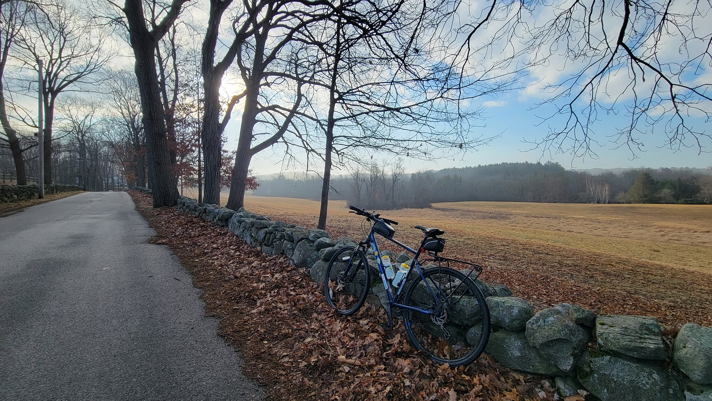
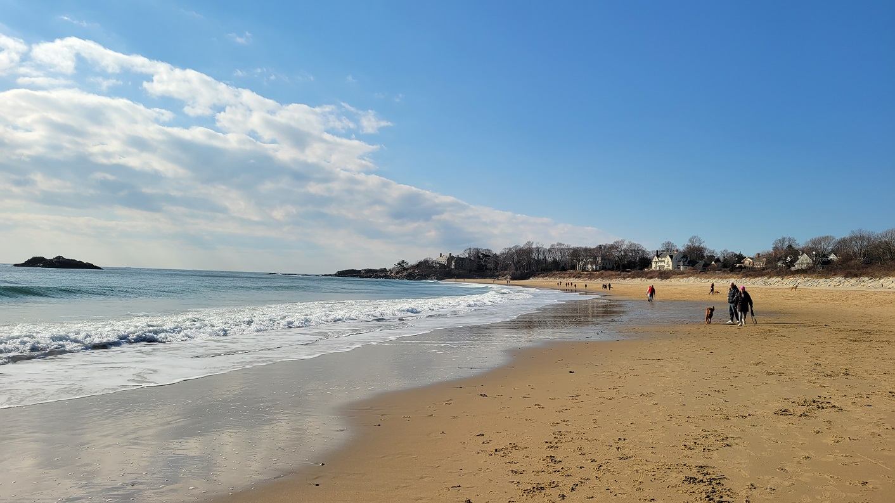
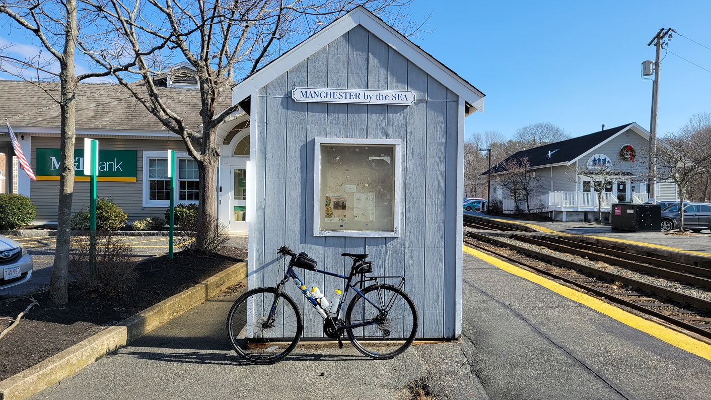
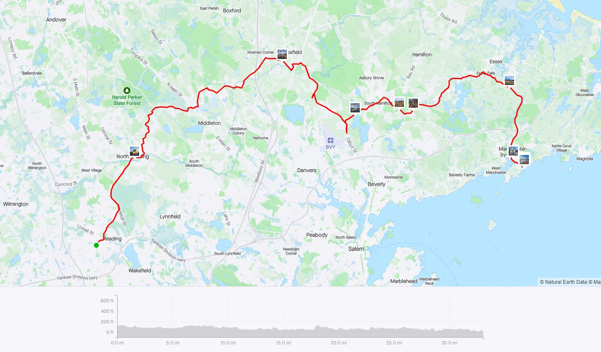
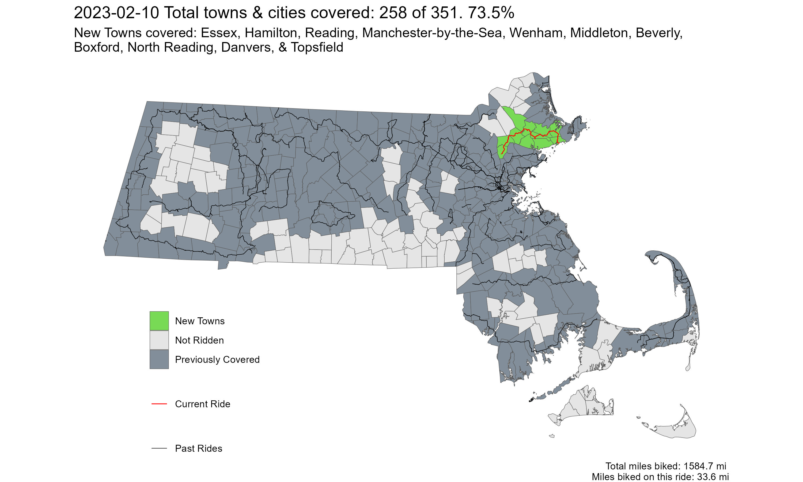

Almost Spring
North Shore - Reading to Singing Beach
Youtube Link Ride With GPS Link
Another warm-ish day in February. We don’t waste those in this part of the world. This ride was a combination of two shorter rides. The route was nice, with no/low traffic, and went through some residential streets, and low-traffic connector roads. After crossing I-95, it became less bedroom-community-ish, and more classic North-Shore village like atmosphere. Towards the end, however, it becomes a little hilly along a busy-ish road and an intersection with 128, but ends at Singing Beach in Manchester-by-the-Sea!
While definitely warm by February standards, it was still February. As such, my regular winter riding attire of 3 layers - long underwear, a T-shirt, and a thin fleece jacket were enough to keep me warm, without feeling stuffy. This route has the potential to be great in the Summer as well as Fall.
 River Road in Topsfield. This was a nice view along a low-stress road, with a great Fall foliage views potential
 Singing Beach in Manchester-by-the-Sea
 Manchester-by-the-Sea Commuter Rail Station
 Strava Route - Almost Spring
Overall, I covered 11 new towns - Essex, Hamilton, Reading, Manchester-by-the-Sea, Wenham, Middleton, Beverly, Boxford, North Reading, Danvers, and Topsfield - bringing the total to 258/351 - 73.5%!
